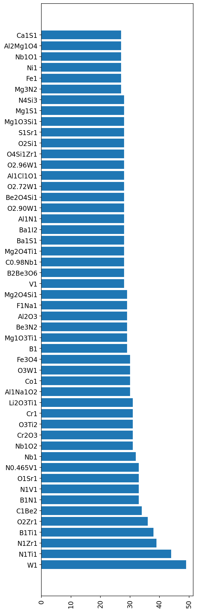
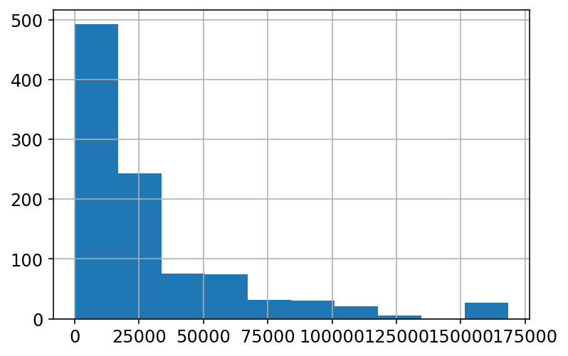
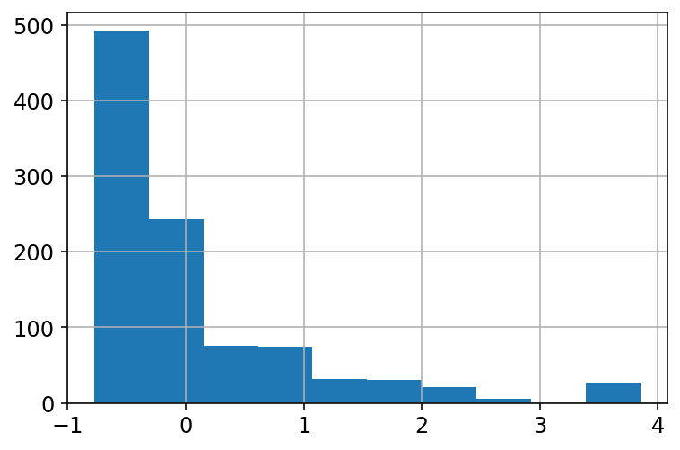
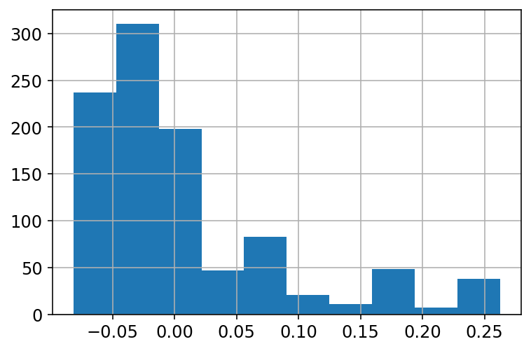
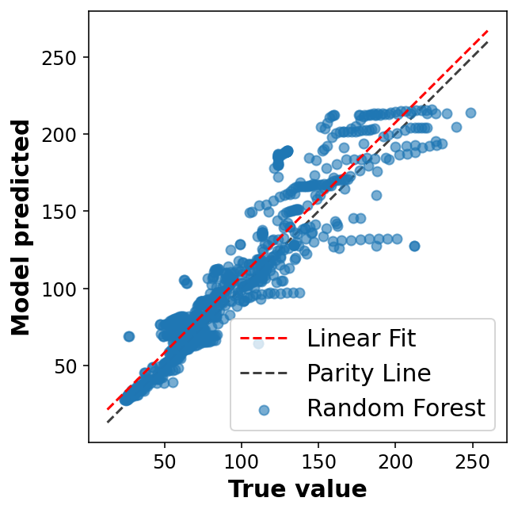
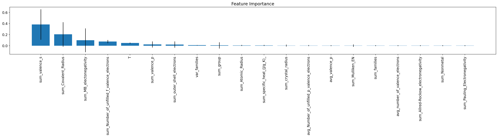
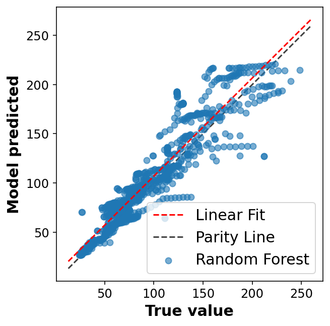

import os
import pandas as pd
import numpy as np
np.random.seed(42)A random forest regression model is built to predict the heat capacity (\(C_p\)) of solid inorganic materials at different temperatures. The dataset is collected from the NIST JANAF Thermochemical Table
This project is adapted from recent publication looking at best practices for setting up mateial informatics task. * A. Y. T. Wang et al., “Machine Learning for Materials Scientists: An Introductory Guide toward Best Practices,” Chem. Mater., vol. 32, no. 12, pp. 4954–4965, 2020.
#----- PLOTTING PARAMS ----#
import matplotlib.pyplot as plt
from matplotlib.pyplot import cm
# High DPI rendering for mac
%config InlineBackend.figure_format = 'retina'
# Plot matplotlib plots with white background:
%config InlineBackend.print_figure_kwargs={'facecolor' : "w"}
plot_params = {
'font.size' : 15,
'axes.titlesize' : 15,
'axes.labelsize' : 15,
'axes.labelweight' : 'bold',
'xtick.labelsize' : 12,
'ytick.labelsize' : 12,
}
plt.rcParams.update(plot_params)Loading and cleaning the data
root_dir = os.getcwd()
csv_file_path = os.path.join(root_dir, 'material_cp.csv')
df = pd.read_csv(csv_file_path)df.sample(5)| FORMULA | CONDITION: Temperature (K) | PROPERTY: Heat Capacity (J/mol K) | |
|---|---|---|---|
| 1207 | F2Hg1 | 1000.0 | 89.538 |
| 3910 | Na2O2 | 400.0 | 97.721 |
| 1183 | Fe0.877S1 | 298.0 | 49.883 |
| 100 | B2Mg1 | 298.0 | 47.823 |
| 3879 | N5P3 | 1000.0 | 265.266 |
print(df.shape)(4583, 3)df.describe().round(2)| CONDITION: Temperature (K) | PROPERTY: Heat Capacity (J/mol K) | |
|---|---|---|
| count | 4579.00 | 4576.00 |
| mean | 1170.92 | 107.48 |
| std | 741.25 | 67.02 |
| min | -2000.00 | -102.22 |
| 25% | 600.00 | 61.31 |
| 50% | 1000.00 | 89.50 |
| 75% | 1600.00 | 135.65 |
| max | 4700.00 | 494.97 |
Rename columns for better data handling
rename_dict = {'FORMULA':'formula', 'CONDITION: Temperature (K)':'T', 'PROPERTY: Heat Capacity (J/mol K)':'Cp'}
df = df.rename(columns=rename_dict)df| formula | T | Cp | |
|---|---|---|---|
| 0 | B2O3 | 1400.0 | 134.306 |
| 1 | B2O3 | 1300.0 | 131.294 |
| 2 | B2O3 | 1200.0 | 128.072 |
| 3 | B2O3 | 1100.0 | 124.516 |
| 4 | B2O3 | 1000.0 | 120.625 |
| ... | ... | ... | ... |
| 4578 | Zr1 | 450.0 | 26.246 |
| 4579 | Zr1 | 400.0 | 25.935 |
| 4580 | Zr1 | 350.0 | 25.606 |
| 4581 | Zr1 | 300.0 | NaN |
| 4582 | Zr1 | 298.0 | 25.202 |
4583 rows × 3 columns
Check for null entries in the dataset
columns_has_NaN = df.columns[df.isnull().any()]
df[columns_has_NaN].isnull().sum()formula 4
T 4
Cp 7
dtype: int64Show the null entries in the dataframe
is_NaN = df.isnull()
row_has_NaN = is_NaN.any(axis=1)
df[row_has_NaN]| formula | T | Cp | |
|---|---|---|---|
| 22 | Be1I2 | 700.0 | NaN |
| 1218 | NaN | 1300.0 | 125.353 |
| 1270 | NaN | 400.0 | 79.036 |
| 2085 | C1N1Na1 | 400.0 | NaN |
| 2107 | Ca1S1 | 1900.0 | NaN |
| 3278 | NaN | NaN | 108.787 |
| 3632 | H2O2Sr1 | NaN | NaN |
| 3936 | NaN | 2000.0 | 183.678 |
| 3948 | Nb2O5 | 900.0 | NaN |
| 3951 | Nb2O5 | 600.0 | NaN |
| 3974 | Ni1 | NaN | 30.794 |
| 4264 | O3V2 | NaN | 179.655 |
| 4581 | Zr1 | 300.0 | NaN |
df_remove_NaN = df.dropna(subset=['formula','Cp','T'])df_remove_NaN.isnull().sum()formula 0
T 0
Cp 0
dtype: int64Remove unrealistic values from the dataset
df_remove_NaN.describe()| T | Cp | |
|---|---|---|
| count | 4570.000000 | 4570.000000 |
| mean | 1171.366355 | 107.469972 |
| std | 741.422702 | 67.033623 |
| min | -2000.000000 | -102.215000 |
| 25% | 600.000000 | 61.301500 |
| 50% | 1000.000000 | 89.447500 |
| 75% | 1600.000000 | 135.624250 |
| max | 4700.000000 | 494.967000 |
T_filter = (df_remove_NaN['T'] < 0)
Cp_filter = (df_remove_NaN['Cp'] < 0)
df_remove_NaN_neg_values = df_remove_NaN.loc[(~T_filter) & (~Cp_filter)]
print(df_remove_NaN_neg_values.shape)(4564, 3)Splitting data
The dataset in this exercise contains different formulae, Cp and T for that entry as a function of T. There are lot of repeated formulae and there is a chance that randomly splitting the dataset in train/val/test would lead to leaks of material entries between 3 sets.
To avoid this the idea is to generate train/val/test such that all material entries belonging a particular type are included in only that set. Eg: B2O3 entries are only in either train/val/test set. To do so let’s first find the unique material entries in the set and sample those without replacement when making the new train/val/test set
df = df_remove_NaN_neg_values.copy()df| formula | T | Cp | |
|---|---|---|---|
| 0 | B2O3 | 1400.0 | 134.306 |
| 1 | B2O3 | 1300.0 | 131.294 |
| 2 | B2O3 | 1200.0 | 128.072 |
| 3 | B2O3 | 1100.0 | 124.516 |
| 4 | B2O3 | 1000.0 | 120.625 |
| ... | ... | ... | ... |
| 4577 | Zr1 | 500.0 | 26.564 |
| 4578 | Zr1 | 450.0 | 26.246 |
| 4579 | Zr1 | 400.0 | 25.935 |
| 4580 | Zr1 | 350.0 | 25.606 |
| 4582 | Zr1 | 298.0 | 25.202 |
4564 rows × 3 columns
# Quick and definitely dirty
from sklearn.model_selection import train_test_split
train_df, test_df = train_test_split(df, test_size=0.4, random_state=42)There are going to be couple of materials which are going to be present in training and test both
# check for intersection
train_set = set(train_df['formula'].unique())
test_set = set(test_df['formula'].unique())
# Check for intersection with val and test
len(train_set.intersection(test_set))243Start with unique splitting task
len(df['formula'].unique())244Out of 244 unique materials entries, 233 are present in both training and test. This is problematic for model building especially since we’re going to featurize the materials using solely the composition-based features.
f_entries = df['formula'].value_counts()[:50]
fig, ax = plt.subplots(1,1, figsize=(5,20))
ax.barh(f_entries.index, f_entries.values)
ax.tick_params(axis='x', rotation=90);
df['formula'].unique()[:10]array(['B2O3', 'Be1I2', 'Be1F3Li1', 'Al1Cl4K1', 'Al2Be1O4', 'B2H4O4',
'B2Mg1', 'Be1F2', 'B1H4Na1', 'Br2Ca1'], dtype=object)Creating train/val/test manually
unique_entries = df['formula'].unique()# Set size for train/val/test set
train_set = 0.7
val_set = 0.2
test_set = 1 - train_set - val_set num_entries_train = int( train_set * len(unique_entries) )
num_entries_val = int( val_set * len(unique_entries) )
num_entries_test = int( test_set * len(unique_entries) )print(num_entries_train, num_entries_val, num_entries_test)170 48 24# Train formula
train_formulae = np.random.choice(unique_entries, num_entries_train, replace=False)
unique_entries_minus_train = [i for i in unique_entries if i not in train_formulae]
# Val formula
val_formulae = np.random.choice(unique_entries_minus_train, num_entries_val, replace=False)
unique_entries_minus_train_val = [i for i in unique_entries_minus_train if i not in val_formulae]
# Test formula
test_formulae = unique_entries_minus_train_val.copy()print(len(train_formulae), len(val_formulae), len(test_formulae))170 48 26train_points = df.loc[ df['formula'].isin(train_formulae) ]
val_points = df.loc[ df['formula'].isin(val_formulae) ]
test_points = df.loc[ df['formula'].isin(test_formulae) ]print(train_points.shape, val_points.shape, test_points.shape)(3131, 3) (944, 3) (489, 3)# Quick sanity check of the method
train_set = set(train_points['formula'].unique())
val_set = set(val_points['formula'].unique())
test_set = set(test_points['formula'].unique())
# Check for intersection with val and test
print(len(train_set.intersection(val_set)), len(train_set.intersection(test_set)))0 0Model fitting
Featurization
Composition-based feature vector (CBFV) is used to describe each mateiral entry (eg: Cr2O3) with set of elemental and composition based numbers.
# Import the package and the generate_features function
from cbfv.composition import generate_featuresrename_columns = {'Cp':'target'}
train_points['Type'] = 'Train'
val_points['Type'] = 'Val'
test_points['Type'] = 'Test'
total_data = pd.concat([train_points, val_points, test_points], ignore_index=True);
total_data = total_data.rename(columns=rename_columns)/Users/pghaneka/miniconda3/envs/torch_38/lib/python3.7/site-packages/ipykernel_launcher.py:2: SettingWithCopyWarning:
A value is trying to be set on a copy of a slice from a DataFrame.
Try using .loc[row_indexer,col_indexer] = value instead
See the caveats in the documentation: https://pandas.pydata.org/pandas-docs/stable/user_guide/indexing.html#returning-a-view-versus-a-copy
/Users/pghaneka/miniconda3/envs/torch_38/lib/python3.7/site-packages/ipykernel_launcher.py:3: SettingWithCopyWarning:
A value is trying to be set on a copy of a slice from a DataFrame.
Try using .loc[row_indexer,col_indexer] = value instead
See the caveats in the documentation: https://pandas.pydata.org/pandas-docs/stable/user_guide/indexing.html#returning-a-view-versus-a-copy
This is separate from the ipykernel package so we can avoid doing imports until
/Users/pghaneka/miniconda3/envs/torch_38/lib/python3.7/site-packages/ipykernel_launcher.py:4: SettingWithCopyWarning:
A value is trying to be set on a copy of a slice from a DataFrame.
Try using .loc[row_indexer,col_indexer] = value instead
See the caveats in the documentation: https://pandas.pydata.org/pandas-docs/stable/user_guide/indexing.html#returning-a-view-versus-a-copy
after removing the cwd from sys.path.total_data.sample(5)| formula | T | target | Type | |
|---|---|---|---|---|
| 3833 | I1K1 | 1400.0 | 74.601 | Val |
| 4215 | Cr2O3 | 298.0 | 120.366 | Test |
| 1290 | I2Mo1 | 1000.0 | 91.458 | Train |
| 1578 | I2Zr1 | 700.0 | 97.445 | Train |
| 2379 | Na2O5Si2 | 1700.0 | 292.880 | Train |
train_df = total_data.loc[ total_data['Type'] == 'Train' ].drop(columns=['Type']).reset_index(drop=True)
val_df = total_data.loc[ total_data['Type'] == 'Val' ].drop(columns=['Type']).reset_index(drop=True)
test_df = total_data.loc[ total_data['Type'] == 'Test' ].drop(columns=['Type']).reset_index(drop=True)Sub-sampling
Only some points from the original training data train_df are used to ensure the analysis is tractable
train_df.shape(3131, 3)train_df = train_df.sample(n=1000, random_state=42)
train_df.shape(1000, 3)# Generate features
X_unscaled_train, y_train, formulae_entry_train, skipped_entry = generate_features(train_df, elem_prop='oliynyk', drop_duplicates=False, extend_features=True, sum_feat=True)
X_unscaled_val, y_val, formulae_entry_val, skipped_entry = generate_features(val_df, elem_prop='oliynyk', drop_duplicates=False, extend_features=True, sum_feat=True)
X_unscaled_test, y_test, formulae_entry_test, skipped_entry = generate_features(test_df, elem_prop='oliynyk', drop_duplicates=False, extend_features=True, sum_feat=True)Processing Input Data: 100%|██████████| 1000/1000 [00:00<00:00, 26074.09it/s]
Assigning Features...: 0%| | 0/1000 [00:00<?, ?it/s] Featurizing Compositions...Assigning Features...: 100%|██████████| 1000/1000 [00:00<00:00, 13526.13it/s] Creating Pandas Objects...
Processing Input Data: 100%|██████████| 944/944 [00:00<00:00, 28169.72it/s]
Assigning Features...: 0%| | 0/944 [00:00<?, ?it/s] Featurizing Compositions...Assigning Features...: 100%|██████████| 944/944 [00:00<00:00, 14855.23it/s] Creating Pandas Objects...Processing Input Data: 100%|██████████| 489/489 [00:00<00:00, 25491.43it/s]
Assigning Features...: 100%|██████████| 489/489 [00:00<00:00, 12626.83it/s] Featurizing Compositions...
Creating Pandas Objects...X_unscaled_train.head(5)| sum_Atomic_Number | sum_Atomic_Weight | sum_Period | sum_group | sum_families | sum_Metal | sum_Nonmetal | sum_Metalliod | sum_Mendeleev_Number | sum_l_quantum_number | ... | range_Melting_point_(K) | range_Boiling_Point_(K) | range_Density_(g/mL) | range_specific_heat_(J/g_K)_ | range_heat_of_fusion_(kJ/mol)_ | range_heat_of_vaporization_(kJ/mol)_ | range_thermal_conductivity_(W/(m_K))_ | range_heat_atomization(kJ/mol) | range_Cohesive_energy | T | |
|---|---|---|---|---|---|---|---|---|---|---|---|---|---|---|---|---|---|---|---|---|---|
| 0 | 64.0 | 139.938350 | 10.5 | 50.0 | 23.25 | 1.0 | 2.75 | 0.0 | 289.25 | 4.75 | ... | 2009873.29 | 5.748006e+06 | 26.002708 | 0.112225 | 252.450947 | 88384.346755 | 4759.155119 | 41820.25 | 4.410000 | 1100.0 |
| 1 | 58.0 | 119.979000 | 10.0 | 40.0 | 18.00 | 1.0 | 2.00 | 0.0 | 231.00 | 4.00 | ... | 505663.21 | 1.328602e+06 | 8.381025 | 0.018225 | 36.496702 | 28866.010000 | 1597.241190 | 4830.25 | 0.511225 | 1100.0 |
| 2 | 27.0 | 58.691000 | 6.0 | 17.0 | 10.00 | 1.0 | 0.00 | 1.0 | 115.00 | 3.00 | ... | 43890.25 | 1.277526e+05 | 1.210000 | 0.062500 | 301.890625 | 1179.922500 | 6.502500 | 2652.25 | 0.230400 | 3400.0 |
| 3 | 36.0 | 72.144000 | 7.0 | 18.0 | 9.00 | 1.0 | 1.00 | 0.0 | 95.00 | 1.00 | ... | 131841.61 | 2.700361e+05 | 0.067600 | 0.001600 | 11.636627 | 5148.062500 | 9973.118090 | 2550.25 | 0.255025 | 2900.0 |
| 4 | 80.0 | 162.954986 | 19.0 | 120.0 | 56.00 | 0.0 | 8.00 | 0.0 | 659.00 | 8.00 | ... | 16129.00 | 5.659641e+04 | 0.826963 | 0.018225 | 0.021993 | 21.791158 | 0.010922 | 6241.00 | 0.555025 | 1300.0 |
5 rows × 177 columns
formulae_entry_train.head(5)0 Mo1O2.750
1 Fe1S2
2 B1Ti1
3 Ca1S1
4 N5P3
Name: formula, dtype: objectX_unscaled_train.shape(1000, 177)Feature scaling
X_unscaled_train.columnsIndex(['sum_Atomic_Number', 'sum_Atomic_Weight', 'sum_Period', 'sum_group',
'sum_families', 'sum_Metal', 'sum_Nonmetal', 'sum_Metalliod',
'sum_Mendeleev_Number', 'sum_l_quantum_number',
...
'range_Melting_point_(K)', 'range_Boiling_Point_(K)',
'range_Density_(g/mL)', 'range_specific_heat_(J/g_K)_',
'range_heat_of_fusion_(kJ/mol)_',
'range_heat_of_vaporization_(kJ/mol)_',
'range_thermal_conductivity_(W/(m_K))_',
'range_heat_atomization(kJ/mol)', 'range_Cohesive_energy', 'T'],
dtype='object', length=177)X_unscaled_train.describe().round(2)| sum_Atomic_Number | sum_Atomic_Weight | sum_Period | sum_group | sum_families | sum_Metal | sum_Nonmetal | sum_Metalliod | sum_Mendeleev_Number | sum_l_quantum_number | ... | range_Melting_point_(K) | range_Boiling_Point_(K) | range_Density_(g/mL) | range_specific_heat_(J/g_K)_ | range_heat_of_fusion_(kJ/mol)_ | range_heat_of_vaporization_(kJ/mol)_ | range_thermal_conductivity_(W/(m_K))_ | range_heat_atomization(kJ/mol) | range_Cohesive_energy | T | |
|---|---|---|---|---|---|---|---|---|---|---|---|---|---|---|---|---|---|---|---|---|---|
| count | 1000.00 | 1000.00 | 1000.00 | 1000.00 | 1000.00 | 1000.00 | 1000.00 | 1000.00 | 1000.00 | 1000.00 | ... | 1000.00 | 1000.00 | 1000.00 | 1000.00 | 1000.00 | 1000.00 | 1000.00 | 1000.00 | 1000.00 | 1000.00 |
| mean | 66.57 | 147.21 | 11.28 | 46.27 | 23.19 | 1.28 | 2.64 | 0.08 | 292.01 | 3.73 | ... | 579042.62 | 1803422.99 | 8.45 | 3.34 | 181.31 | 28201.58 | 3305.55 | 14959.38 | 1.70 | 1195.38 |
| std | 48.94 | 116.53 | 6.33 | 36.29 | 16.68 | 0.76 | 2.32 | 0.31 | 210.15 | 2.59 | ... | 750702.41 | 2017584.79 | 17.52 | 10.61 | 413.13 | 36421.94 | 4474.33 | 22191.74 | 2.45 | 760.90 |
| min | 4.00 | 7.95 | 2.00 | 1.00 | 1.00 | 0.00 | 0.00 | 0.00 | 3.00 | 0.00 | ... | 0.00 | 0.00 | 0.00 | 0.00 | 0.00 | 0.00 | 0.00 | 0.00 | 0.00 | 0.00 |
| 25% | 31.00 | 65.12 | 6.00 | 18.00 | 10.00 | 1.00 | 1.00 | 0.00 | 126.00 | 2.00 | ... | 20619.03 | 199191.78 | 0.23 | 0.01 | 1.88 | 1451.91 | 119.61 | 729.00 | 0.09 | 600.00 |
| 50% | 55.00 | 118.00 | 10.00 | 36.00 | 20.00 | 1.00 | 2.00 | 0.00 | 247.00 | 3.00 | ... | 222030.88 | 1169819.78 | 1.25 | 0.05 | 20.92 | 18260.29 | 1607.65 | 5312.67 | 0.63 | 1054.00 |
| 75% | 86.00 | 182.15 | 15.00 | 72.00 | 36.00 | 2.00 | 4.00 | 0.00 | 442.00 | 5.00 | ... | 882096.64 | 3010225.00 | 9.33 | 0.12 | 171.31 | 40317.25 | 4968.28 | 18080.67 | 2.08 | 1600.00 |
| max | 278.00 | 685.60 | 41.00 | 256.00 | 113.00 | 4.00 | 15.00 | 2.00 | 1418.00 | 19.00 | ... | 3291321.64 | 8535162.25 | 93.11 | 44.12 | 2391.45 | 168342.03 | 40198.47 | 95733.56 | 10.59 | 4600.00 |
8 rows × 177 columns
X_unscaled_train['range_heat_of_vaporization_(kJ/mol)_'].hist();
from sklearn.preprocessing import StandardScaler, normalizestdscaler = StandardScaler()
X_train = stdscaler.fit_transform(X_unscaled_train)
X_val = stdscaler.transform(X_unscaled_val)
X_test = stdscaler.transform(X_unscaled_test)pd.DataFrame(X_train, columns=X_unscaled_train.columns).describe().round(2)| sum_Atomic_Number | sum_Atomic_Weight | sum_Period | sum_group | sum_families | sum_Metal | sum_Nonmetal | sum_Metalliod | sum_Mendeleev_Number | sum_l_quantum_number | ... | range_Melting_point_(K) | range_Boiling_Point_(K) | range_Density_(g/mL) | range_specific_heat_(J/g_K)_ | range_heat_of_fusion_(kJ/mol)_ | range_heat_of_vaporization_(kJ/mol)_ | range_thermal_conductivity_(W/(m_K))_ | range_heat_atomization(kJ/mol) | range_Cohesive_energy | T | |
|---|---|---|---|---|---|---|---|---|---|---|---|---|---|---|---|---|---|---|---|---|---|
| count | 1000.00 | 1000.00 | 1000.00 | 1000.00 | 1000.00 | 1000.00 | 1000.00 | 1000.00 | 1000.00 | 1000.00 | ... | 1000.00 | 1000.00 | 1000.00 | 1000.00 | 1000.00 | 1000.00 | 1000.00 | 1000.00 | 1000.00 | 1000.00 |
| mean | -0.00 | -0.00 | -0.00 | 0.00 | -0.00 | -0.00 | -0.00 | -0.00 | -0.00 | -0.00 | ... | 0.00 | 0.00 | -0.00 | 0.00 | 0.00 | 0.00 | 0.00 | 0.00 | 0.00 | -0.00 |
| std | 1.00 | 1.00 | 1.00 | 1.00 | 1.00 | 1.00 | 1.00 | 1.00 | 1.00 | 1.00 | ... | 1.00 | 1.00 | 1.00 | 1.00 | 1.00 | 1.00 | 1.00 | 1.00 | 1.00 | 1.00 |
| min | -1.28 | -1.20 | -1.47 | -1.25 | -1.33 | -1.68 | -1.14 | -0.27 | -1.38 | -1.44 | ... | -0.77 | -0.89 | -0.48 | -0.31 | -0.44 | -0.77 | -0.74 | -0.67 | -0.69 | -1.57 |
| 25% | -0.73 | -0.70 | -0.83 | -0.78 | -0.79 | -0.36 | -0.71 | -0.27 | -0.79 | -0.67 | ... | -0.74 | -0.80 | -0.47 | -0.31 | -0.43 | -0.73 | -0.71 | -0.64 | -0.66 | -0.78 |
| 50% | -0.24 | -0.25 | -0.20 | -0.28 | -0.19 | -0.36 | -0.27 | -0.27 | -0.21 | -0.28 | ... | -0.48 | -0.31 | -0.41 | -0.31 | -0.39 | -0.27 | -0.38 | -0.43 | -0.43 | -0.19 |
| 75% | 0.40 | 0.30 | 0.59 | 0.71 | 0.77 | 0.96 | 0.59 | -0.27 | 0.71 | 0.49 | ... | 0.40 | 0.60 | 0.05 | -0.30 | -0.02 | 0.33 | 0.37 | 0.14 | 0.15 | 0.53 |
| max | 4.32 | 4.62 | 4.69 | 5.78 | 5.39 | 3.59 | 5.34 | 6.18 | 5.36 | 5.89 | ... | 3.61 | 3.34 | 4.83 | 3.84 | 5.35 | 3.85 | 8.25 | 3.64 | 3.62 | 4.48 |
8 rows × 177 columns
pd.DataFrame(X_train, columns=X_unscaled_train.columns)['range_heat_of_vaporization_(kJ/mol)_'].hist()
X_train = normalize(X_train)
X_val = normalize(X_val)
X_test = normalize(X_test)pd.DataFrame(X_train, columns=X_unscaled_train.columns).describe().round(2)| sum_Atomic_Number | sum_Atomic_Weight | sum_Period | sum_group | sum_families | sum_Metal | sum_Nonmetal | sum_Metalliod | sum_Mendeleev_Number | sum_l_quantum_number | ... | range_Melting_point_(K) | range_Boiling_Point_(K) | range_Density_(g/mL) | range_specific_heat_(J/g_K)_ | range_heat_of_fusion_(kJ/mol)_ | range_heat_of_vaporization_(kJ/mol)_ | range_thermal_conductivity_(W/(m_K))_ | range_heat_atomization(kJ/mol) | range_Cohesive_energy | T | |
|---|---|---|---|---|---|---|---|---|---|---|---|---|---|---|---|---|---|---|---|---|---|
| count | 1000.00 | 1000.00 | 1000.00 | 1000.00 | 1000.00 | 1000.00 | 1000.00 | 1000.00 | 1000.00 | 1000.00 | ... | 1000.00 | 1000.00 | 1000.00 | 1000.00 | 1000.00 | 1000.00 | 1000.00 | 1000.00 | 1000.00 | 1000.00 |
| mean | -0.01 | -0.01 | -0.00 | -0.00 | -0.00 | 0.00 | -0.00 | -0.01 | -0.00 | 0.00 | ... | 0.00 | 0.01 | -0.00 | -0.01 | -0.00 | 0.01 | 0.00 | -0.00 | -0.00 | 0.00 |
| std | 0.07 | 0.07 | 0.07 | 0.07 | 0.07 | 0.08 | 0.07 | 0.07 | 0.07 | 0.08 | ... | 0.08 | 0.08 | 0.07 | 0.07 | 0.07 | 0.08 | 0.09 | 0.08 | 0.08 | 0.09 |
| min | -0.12 | -0.11 | -0.13 | -0.11 | -0.11 | -0.12 | -0.11 | -0.04 | -0.12 | -0.13 | ... | -0.08 | -0.10 | -0.06 | -0.05 | -0.05 | -0.08 | -0.12 | -0.09 | -0.09 | -0.19 |
| 25% | -0.06 | -0.06 | -0.06 | -0.06 | -0.06 | -0.04 | -0.06 | -0.03 | -0.06 | -0.05 | ... | -0.05 | -0.05 | -0.03 | -0.03 | -0.04 | -0.05 | -0.05 | -0.05 | -0.05 | -0.06 |
| 50% | -0.02 | -0.03 | -0.02 | -0.02 | -0.02 | -0.03 | -0.02 | -0.02 | -0.02 | -0.02 | ... | -0.03 | -0.03 | -0.03 | -0.02 | -0.03 | -0.02 | -0.03 | -0.04 | -0.04 | -0.02 |
| 75% | 0.03 | 0.02 | 0.06 | 0.06 | 0.06 | 0.06 | 0.05 | -0.02 | 0.07 | 0.05 | ... | 0.04 | 0.04 | 0.01 | -0.02 | -0.00 | 0.02 | 0.03 | 0.02 | 0.01 | 0.05 |
| max | 0.25 | 0.26 | 0.19 | 0.20 | 0.19 | 0.25 | 0.20 | 0.40 | 0.19 | 0.24 | ... | 0.22 | 0.23 | 0.29 | 0.32 | 0.43 | 0.26 | 0.58 | 0.26 | 0.24 | 0.38 |
8 rows × 177 columns
pd.DataFrame(X_train, columns=X_unscaled_train.columns)['range_heat_of_vaporization_(kJ/mol)_'].hist()
Model fitting
from time import time
from sklearn.ensemble import RandomForestRegressor
from sklearn.linear_model import LinearRegression
from sklearn.metrics import r2_score, mean_absolute_error, mean_squared_errormodel = RandomForestRegressor(random_state=42)%%time
model.fit(X_train, y_train)CPU times: user 5.51 s, sys: 31.7 ms, total: 5.54 s
Wall time: 5.57 sRandomForestRegressor(random_state=42)def display_performance(y_true, y_pred):
r2 = r2_score(y_true, y_pred)
mae = mean_absolute_error(y_true, y_pred)
rmse = np.sqrt(mean_squared_error(y_true, y_pred))
print('R2: {0:0.2f}\n'
'MAE: {1:0.2f}\n'
'RMSE: {2:0.2f}'.format(r2, mae, rmse))
return(r2, mae, rmse)y_pred = model.predict(X_val)
display_performance(y_val,y_pred);R2: 0.81
MAE: 14.03
RMSE: 20.48fig, ax = plt.subplots(1,1, figsize=(5,5))
ax.scatter(y_val, y_pred, alpha=0.6, label='Random Forest')
lims = [np.min([ax.get_xlim(), ax.get_ylim()]), # min of both axes
np.max([ax.get_xlim(), ax.get_ylim()]), # max of both axes
]
# Linear fit
reg = np.polyfit(y_val, y_pred, deg=1)
ax.plot(lims, reg[0] * np.array(lims) + reg[1], 'r--', linewidth=1.5, label='Linear Fit')
ax.plot(lims, lims, 'k--', alpha=0.75, zorder=0, label='Parity Line')
ax.set_aspect('equal')
ax.set_xlabel('True value')
ax.set_ylabel('Model predicted')
ax.legend(loc='best')
Feature Importance
feature_name = [i for i in X_unscaled_train.columns]len(feature_name)177X_train.shape(1000, 177)len(model.estimators_)100mean_feature_importance = model.feature_importances_
std_feature_importance = np.std([ tree.feature_importances_ for tree in model.estimators_ ], axis=0)feat_imp_df = pd.DataFrame({'name':feature_name, 'mean_imp':mean_feature_importance, 'std_dev':std_feature_importance})feat_imp_df_top = feat_imp_df.sort_values('mean_imp', ascending=False)[:20]feat_imp_df_top[:5]| name | mean_imp | std_dev | |
|---|---|---|---|
| 24 | sum_valence_s | 0.383415 | 0.273328 |
| 12 | sum_Covalent_Radius | 0.205463 | 0.220244 |
| 17 | sum_MB_electonegativity | 0.098704 | 0.212963 |
| 31 | sum_Number_of_unfilled_f_valence_electrons | 0.076559 | 0.028590 |
| 176 | T | 0.049666 | 0.008509 |
fig, ax = plt.subplots(1,1, figsize=(30,3))
ax.bar(feat_imp_df_top['name'], feat_imp_df_top['mean_imp'], yerr=feat_imp_df_top['std_dev'])
ax.tick_params(axis='x', rotation=90)
ax.set_title('Feature Importance');
top_feature_list = feat_imp_df.loc[ feat_imp_df['mean_imp'] > 0.001 ]['name']len(top_feature_list)40X_train_df = pd.DataFrame(X_train, columns=feature_name)
X_val_df = pd.DataFrame(X_val, columns=feature_name)
X_train_short = X_train_df[list(top_feature_list)]
X_val_short = X_val_df[list(top_feature_list)]print(X_train_short.shape, X_train.shape)(1000, 40) (1000, 177)Refit a new model on small feature set
model_small = RandomForestRegressor(random_state=42)%%time
model_small.fit(X_train_short, y_train)CPU times: user 1.41 s, sys: 13.9 ms, total: 1.43 s
Wall time: 1.44 sRandomForestRegressor(random_state=42)y_pred = model_small.predict(X_val_short)
display_performance(y_val, y_pred);R2: 0.81
MAE: 13.87
RMSE: 20.40fig, ax = plt.subplots(1,1, figsize=(5,5))
ax.scatter(y_val, y_pred, alpha=0.6, label='Random Forest')
lims = [np.min([ax.get_xlim(), ax.get_ylim()]), # min of both axes
np.max([ax.get_xlim(), ax.get_ylim()]), # max of both axes
]
# Linear fit
reg = np.polyfit(y_val, y_pred, deg=1)
ax.plot(lims, reg[0] * np.array(lims) + reg[1], 'r--', linewidth=1.5, label='Linear Fit')
ax.plot(lims, lims, 'k--', alpha=0.75, zorder=0, label='Parity Line')
ax.set_aspect('equal')
ax.set_xlabel('True value')
ax.set_ylabel('Model predicted')
ax.legend(loc='best')
Cross-validation
Combine train and validation set to generate one train - test set for cross-validation
# Train stack
X_y_train = np.c_[X_train_short, y_train]
X_y_train.shape(1000, 41)np.unique(X_y_train[:,-1] - y_train)array([0.])# Validation stack
X_y_val = np.c_[X_val_short, y_val]X_Y_TRAIN = np.vstack((X_y_train, X_y_val))X_TRAIN = X_Y_TRAIN[:,0:-1].copy()
Y_TRAIN = X_Y_TRAIN[:,-1].copy()
print(X_TRAIN.shape, Y_TRAIN.shape)(1944, 40) (1944,)from sklearn.model_selection import cross_validate
def display_score(scores, metric):
score_key = 'test_{}'.format(metric)
print(metric)
print('Mean: {}'.format(scores[score_key].mean()))
print('Std dev: {}'.format(scores[score_key].std()))%%time
_scoring = ['neg_root_mean_squared_error', 'neg_mean_absolute_error']
forest_scores = cross_validate(model, X_TRAIN, Y_TRAIN,
scoring = _scoring, cv=5)CPU times: user 11.1 s, sys: 66 ms, total: 11.1 s
Wall time: 11.2 sdisplay_score(forest_scores, _scoring[0])neg_root_mean_squared_error
Mean: -15.22268277329878
Std dev: 3.677396464443359display_score(forest_scores, _scoring[1])neg_mean_absolute_error
Mean: -9.559763633911203
Std dev: 2.786793874037375Hyperparameter Optimization
import joblib
from sklearn.model_selection import RandomizedSearchCVrandom_forest_base_model = RandomForestRegressor(random_state=42)
param_grid = {
'bootstrap':[True],
'min_samples_leaf':[5,10,100,200,500],
'min_samples_split':[5,10,100,200,500],
'n_estimators':[100,200,400,500],
'max_features':['auto','sqrt','log2'],
'max_depth':[5,10,15,20]
}CV_rf = RandomizedSearchCV(estimator=random_forest_base_model,
n_iter=50,
param_distributions=param_grid,
scoring='neg_root_mean_squared_error',
cv = 5, verbose = 1, n_jobs=-1, refit=True)%%time
with joblib.parallel_backend('multiprocessing'):
CV_rf.fit(X_TRAIN, Y_TRAIN)Fitting 5 folds for each of 50 candidates, totalling 250 fits
CPU times: user 646 ms, sys: 183 ms, total: 829 ms
Wall time: 1min 5sprint(CV_rf.best_params_, CV_rf.best_score_){'n_estimators': 100, 'min_samples_split': 10, 'min_samples_leaf': 10, 'max_features': 'auto', 'max_depth': 20, 'bootstrap': True} -19.161578679126375pd.DataFrame(CV_rf.cv_results_).sort_values('rank_test_score')[:5]| mean_fit_time | std_fit_time | mean_score_time | std_score_time | param_n_estimators | param_min_samples_split | param_min_samples_leaf | param_max_features | param_max_depth | param_bootstrap | params | split0_test_score | split1_test_score | split2_test_score | split3_test_score | split4_test_score | mean_test_score | std_test_score | rank_test_score | |
|---|---|---|---|---|---|---|---|---|---|---|---|---|---|---|---|---|---|---|---|
| 4 | 2.390702 | 0.061919 | 0.014793 | 0.000683 | 100 | 10 | 10 | auto | 20 | True | {'n_estimators': 100, 'min_samples_split': 10,... | -19.636059 | -20.949326 | -16.321387 | -18.878979 | -20.022143 | -19.161579 | 1.568968 | 1 |
| 20 | 1.299131 | 0.010285 | 0.033008 | 0.003166 | 200 | 10 | 10 | sqrt | 10 | True | {'n_estimators': 200, 'min_samples_split': 10,... | -21.980440 | -23.012936 | -18.847124 | -19.781677 | -17.760789 | -20.276593 | 1.949783 | 2 |
| 22 | 10.616245 | 0.066480 | 0.084979 | 0.025942 | 500 | 5 | 10 | auto | 5 | True | {'n_estimators': 500, 'min_samples_split': 5, ... | -21.048335 | -23.039862 | -18.059296 | -18.935399 | -20.566808 | -20.329940 | 1.733000 | 3 |
| 40 | 3.364752 | 0.126191 | 0.089052 | 0.004354 | 500 | 10 | 10 | sqrt | 15 | True | {'n_estimators': 500, 'min_samples_split': 10,... | -22.245647 | -23.261791 | -18.796893 | -20.179776 | -17.747398 | -20.446301 | 2.061082 | 4 |
| 2 | 0.448634 | 0.006245 | 0.015180 | 0.001035 | 100 | 5 | 10 | log2 | 20 | True | {'n_estimators': 100, 'min_samples_split': 5, ... | -22.658766 | -23.491199 | -19.473837 | -20.457559 | -17.931118 | -20.802496 | 2.039804 | 5 |
best_model = CV_rf.best_estimator_best_modelRandomForestRegressor(max_depth=20, min_samples_leaf=10, min_samples_split=10,
random_state=42)